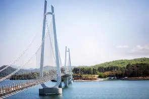
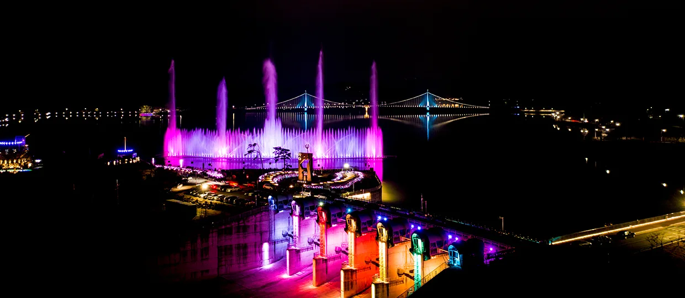
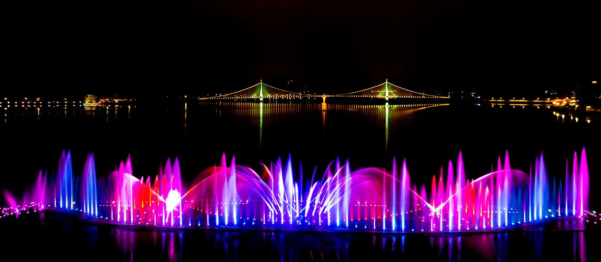
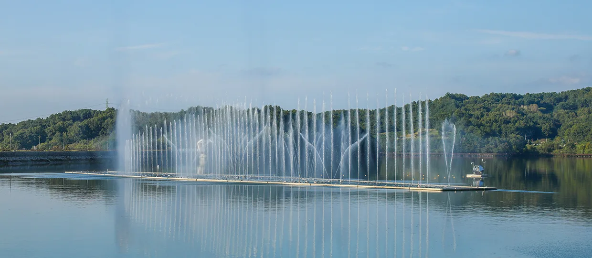
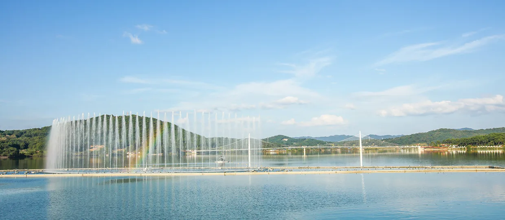
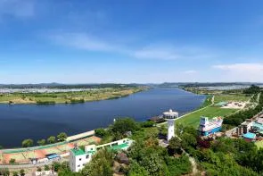

▲ 탑정호 위를 가로지르는 탑정호출렁다리. 호수 위에 놓인 다리 중 국내 최장으로 한국기록원 인증을 받았다
충남 논산시 가야곡면, 바다처럼 넓게 펼쳐진 탑정호 위로 길이 600m의 다리가 놓여 있다. 2018년 8월 착공해 2020년 10월 준공된 탑정호출렁다리로, 호수 위에 설치된 다리 중 국내에서 가장 길다는 사실을 한국기록원(KRI)으로부터 인증받았다. 2021년 7월 개방 이후 누적 방문객이 300만 명을 넘어섰다는 집계가 나올 만큼 충남을 대표하는 관광지로 자리 잡았다. 앞서 소개한 대둔산 케이블카 코스에서도 잠깐 언급됐던 탑정호를, 이번에는 다리 자체를 중심에 놓고 살펴봤다.
1. 600m 국내 최장급 — 호수 위에 놓인 다리
▲ 상공에서 내려다본 탑정호와 출렁다리. 호수 규모가 커 '바다 같다'는 이야기가 자주 나온다 ⓒ 논산시청
탑정호는 논산 3대 저수지 중 하나로 꼽힐 만큼 넓은 수면적을 자랑한다. 그 위에 놓인 출렁다리는 총 길이 600m로, 양쪽 기슭을 잇는 구간 대부분이 육지가 아닌 호수 수면 위를 지난다는 점이 특징이다. 2018년 8월 30일 착공해 2020년 10월 15일 준공됐고, 정식 개방은 2021년 7월부터 이뤄졌다. 준공 이후 한국기록원으로부터 '호수 위에 설치된 가장 긴 출렁다리'로 인증받으며 상징성을 더했다. 구조적으로는 초속 60m의 강풍에서도 통행이 가능하도록 설계됐고, 성인 약 5000명의 하중을 견딜 수 있는 것으로 소개된다.

▲ 다리를 가까이서 내려다본 모습. 수면과 가까운 높이로 놓여 개방감이 크다 ⓒ 논산시청
2. 미디어파사드와 음악분수 — 밤에 완성되는 풍경

▲ 야간에 펼쳐지는 탑정호 음악분수 조명쇼. 다리와 함께 야경 명소로 꼽힌다 ⓒ 논산시청
탑정호출렁다리는 낮과 밤의 인상이 크게 다르다. 해가 진 뒤에는 다리 전체에 미디어파사드 조명이 켜지고, 인근 음악분수에서는 음악에 맞춰 물줄기와 조명이 어우러지는 쇼가 펼쳐진다. 다리 자체를 스크린 삼아 영상과 문구를 표출하는 연출도 소개되며, 일몰 후부터 밤 10시까지 미디어파사드가 운영된다는 기록이 있다. 낮에 호수와 산자락을 조망하는 다리로 방문했다가, 저녁까지 머물며 조명쇼를 함께 보는 일정으로 하루를 채우는 방문객이 많다.

▲ 다채로운 색상으로 연출되는 음악분수 쇼. 호수 건너편 불빛과 함께 야경을 이룬다 ⓒ 논산시청
3. 낮에는 산책로, 밤과는 또 다른 표정

▲ 나무 사이로 내다본 탑정호출렁다리. 다리 초입 산책로에서 볼 수 있는 풍경이다 ⓒ 논산시청

▲ 낮 시간대의 음악분수. 야간 조명쇼와 달리 시원한 물줄기 자체를 감상하는 분위기다 ⓒ 논산시청
야간 조명이 화제가 되며 밤 방문객이 많이 몰리지만, 낮 시간대의 탑정호도 나름의 매력이 있다. 물안개가 낀 이른 아침이나 노을이 물드는 늦은 오후에는 다리와 호수, 산자락이 어우러지는 잔잔한 풍경을 볼 수 있다. 다리 인근에는 수변데크가 별도로 조성돼 있어, 다리를 건너는 대신 호숫가를 따라 걷는 산책 코스로도 활용할 수 있다. 다리 초입 인근 산책로에는 계절에 따라 단풍이 물드는 구간도 있어, 다리 왕복만으로 아쉽다면 함께 걸어볼 만하다.

▲ 탑정호 인근 산책로. 가을이면 단풍이 물들어 다리와 함께 둘러보기 좋은 코스가 된다 ⓒ 논산시청
4. 입장료·주차·이용시간
탑정호출렁다리는 입장료가 없다. 주차는 북문1주차장, 북문2주차장, 음악분수 주차장 등 여러 곳에 나뉘어 마련돼 있어 성수기 주말에도 비교적 분산 이용이 가능하다. 계절별로 개장시간이 달라지는데, 3~5월과 9~10월은 오전 9시부터 오후 6시까지(입장마감 17시30분), 6~8월은 오후 8시까지(입장마감 19시30분), 11~2월은 오후 5시까지(입장마감 16시30분) 운영된다.
| 항목 | 내용 |
|---|---|
| 길이 | 600m(호수 위 설치, 국내 최장 KRI 인증) |
| 착공·준공 | 2018년 8월 착공, 2020년 10월 준공, 2021년 7월 개방 |
| 운영시간 | 3~5·9~10월 09:00~18:00 / 6~8월 09:00~20:00 / 11~2월 09:00~17:00 |
| 야간 경관 | 미디어파사드(일몰 후~22:00), 음악분수 |
| 입장료·주차 | 무료(북문1·2주차장, 음악분수 주차장) |
| 위치 | 충남 논산시 가야곡면 종연리 일대 |
| 문의 | 041-746-6645 |
5. 대둔산과 묶어 하루 코스로
탑정호는 논산시 가야곡면·연무읍 일대에 걸쳐 있어, 완주·논산 경계의 대둔산도립공원과 함께 여행 일정을 짜기에도 위치가 나쁘지 않다. 오전에 대둔산 케이블카와 금강구름다리·삼선계단을 둘러보고, 오후 늦게 탑정호로 이동해 해 질 무렵부터 야간 조명까지 이어보는 동선이 대표적이다. 대둔산 쪽에서 볼 때 탑정호는 자락에서 흘러내린 물줄기가 모이는 저수지로 소개되곤 하는데, 이번 기사에서 살펴본 것처럼 다리 자체의 규모와 야간 경관만으로도 별도의 반나절 일정을 채울 만한 목적지다.
✅ 논산 탑정호출렁다리, 가기 전 체크리스트
· 길이 600m, 호수 위 설치 다리로는 국내 최장 한국기록원 인증(2020년 10월 준공, 2021년 7월 개방)
· 초속 60m 강풍에도 통행 가능한 구조, 약 5000명 하중까지 견디는 것으로 소개
· 밤에는 미디어파사드·음악분수 조명쇼, 낮에는 잔잔한 호수 산책 코스로 표정이 다름
· 운영시간은 계절별로 상이(6~8월이 가장 김, 11~2월이 가장 짧음)
· 입장료·주차 모두 무료(북문1·2주차장, 음악분수 주차장)
· 대둔산도립공원과 묶어 하루 코스로 구성 가능